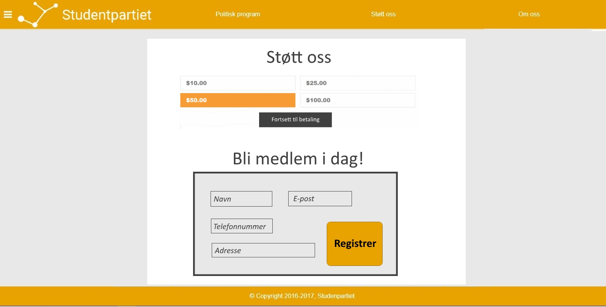

Project Changes
Ole Fredrik Borgundvåg Berg, Olav Håberg Dimmen, Kasper Maagerø Svendsen, Andreas Jensen Jonassen and Liam Svanåsbakken Crouch
28.10.2017
Link to frontpageChanges in design
-
Front page:
The page design is edited here because of aesthetics. The old design was very uninteresting, with a lot of text.
The new design with icons and tiles for each of our political goals is thought to make the goals more apparent.
We took the information in a div, because we use similar design on other pages and wanted to universalize. Furthermore, the div makes a clear contrast between the content and the background.
We also decided to have a button to link to the political program because, an ordinary link is somewhat boring and unmordern to have on the frontpage.
Old design:
New design:

-
Contact page
There are few changes to the design on this page.
We decided to take the have labels instead of placeholder for the input-fields, because then you may read what the field is for even when you are writing in that field.
We also have no social media icons in the center of the page, because we think the icons on the bottom on the page is enough.
Old design:

New design:

-
Political program
The page should contain Studentpartiet's political views and a way to compare those views to that of other political parties.
The purpose of this page is to make the party's political views easily accessible if people wonder what the party's views are in one certain area, and how they compare to those of other parties. This is only for people wondering what their views is in a certain area, the party's main political objectives are promoted on the front page.
The design of this site is going to be a headline at the top. Below it, we are going to have select elements, with labels of what they are for. Below that again, we have a button that get the application started.
The application is going to consist of a HTML table, with two columns and two rows. The first row is going to have the name of the respective parties, and the second row is going to have their views. The table is going to be styled with collapsed 2px solid black borders.
This is the page where the political comparison application will be located.

-
Our politicians
The page should contain pictures and a short summary of Studentpartiet's politicians, so that the visitors can learn to trust them, and eventually vote for them.
People usually trust people if they feel they know them on a deeper level, therefore this page intend to tell the personal stories of Stundentpartiet's politicians.
The page should also contain links to the politicians' accounts on social media, both so that people can get better acquainted with the party's politicians and so that people can get the latest news from their politicians and ask them questions if they have any.
The design is going to be the picture of several politicians smiling, and their story, as tiles.
The reason we use tile design, is that it will make the site more organized.

-
About page
The page should contain some basic information about the party.
As Studentpartiet is a brand new and mostly unknown party, this page is important, as the public would like some basic information about the party to understand it's history and it's goals.
Another purpose of this page is to make it clear to people that this is a serious party, when people hasn't heard of it before.
The design should be simple, as this should just be an overview page of the party. The idea is to not have much on the page, as the visitors shouldn't be overwhelmed with information.
Therefore the design would be a textbox with some information, and a picture of our logo next to it.
-
History page
The page should contain Studentpartiet's history on a timeline.
As with the about page, this page is to educate people about Studentpartiet, believing that it is easier for people to support them and understand why they fight if they know their history.
The design should have a timeline that consists of tiles, squares with information with an arrow towards the line, which appear when the user scolls down.
The purpose is to make a page that doesn't overwhelm the user by showing all the information at once, and to make it more exiting to read about their history by having animations.

-
Supporting page
The page should contain a way to donate to the party and a way to become a member of the party.
The page should also include dates for political meetings and demonstration, so that supporters find a way to promote the party's views, and people interested in the party find a meeting so that they can discuss the party's politics.
The page should also include open positions in the party, and ways to volunteer for the party. Among other things, they need someone volunteering as responsible for the web page, when this project is done
The purpose of this site is for supporters of the party to find way to help the party. It is also to promote activism among students, by helping them find ways to get their voices heard.
 -
Site map
The page should contain a list of all the pages on this site. They will be sorted by hierarchy by what pages links to what pages.
The page would simply be an unordered list with unordered lists inside each other, as that is a simple, yet practical design.
The purpose of this page is so that visitors can find the page they are looking for, by having an easily read list.

How we fulfilled our minimum requirements
-
Ole Fredrik:
This function is a picture gallery with transitions between different pictures.
The picture gallery is going to have two arrows for navigation. These will be on each site of the picture and will appear when the user hover the mouse over the picture. Because of this, the gallery will only have a still image on mobile
This will be made with HTML5 canvas. The arrows will appear when the mouseover function triggers on the canvas and disappear on mouseleave. To make the transition for the pictures, we will use window.setinterval and change the x-coordinate of the picture
-
Political comparison:
This function is that you have two select tags and a button. The first select tag has a number of policy areas where you might want to know Studentpartiet's opinion. The second select tag has a number of Norwegian political parties. When you click the button you get a comparison of Studenpartiet and the other party on that specific policy area
This will be made with JavaScript, with the different political views are laying in arrays. JavaScript is going to get the right value when the button is pressed, with the choices you made and add them into the HTML, and remove eventual political comparisons that are there already.
-
History line:
This function is that you have an vertical line in the middle of the web page, and when you are scrolling down new elements are appearing next to the line, with an animation.
This will be made with JavaScript, by having the different elements in an array, and get the scroll value when scrolling, and use it to add new elements along the line.
-
Navigation bar:
The navigation bar will be located via the button in the top left of the user's screen. This will give the user direct access to the other contents of the webpage.
Plan
| Creator | Task | File | Due date |
|---|---|---|---|
| Ole Fredrik | HTML kontaktside | kontakt.html | 20.10.2017 |
| Liam | HTML setup sitemap | sitemap.html | 20.10.2017 |
| Olav | Picture edit | All of the required images(jpg) | 20.10.2017 |
| Kasper, Andreas | CSS main stylesheet | main.css | 01.11.2017 |
| Ole Fredrik Berg | Picture gallery in HTML5 canvas and JavaScript | galleri.js and index.html | 05.11.2017 |
| Liam | History line | historie.js and historie.html | 05.11.2017 |
| Andreas | Navigation bar | navigation.js | 05.11.2017 |
| Kasper | Javascript application, html document, comparison of political views | program.js and program.html | 05.11.2017 |
| Olav | HTML setup Om, Politikere, Støtte | om.html, politikere.html, stotte.html | 05.11.2017 |